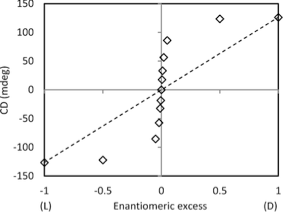
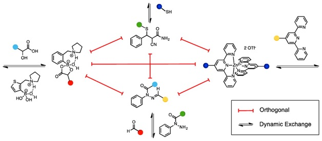

Cooperative Assemblies and Orthogonal Dynamic Covalent Reactions
Among others, our group, and that of Wolf, have reported methods for the ee determination of chiral analytes bearing functional groups such as amines, amino alcohols, amino acids, carboxylates, and secondary alcohols. For the most part, the errors for these methods lie in the range of 3-8%. These errors have generally been viewed to be low enough to identify hits by high-throughput screening, but in order to distinguish a 99% ee from a 97% ee, it would still be necessary to employ more accurate methods such as chiral HPLC. To this end, we have shown how to lower the error in circular dichroism (CD) based ee determination by taking advantage of the majority rules effect in helical polymers. If a polymer exhibits this effect, a nonlinear response to the ee of chiral monomer units is observed. Due to the relatively high enthalpic penalty of helix reversal in these polymers, small ee’s in the monomer units can lead to an almost complete preference of the polymer for only one helical twist. If the polymer backbone contains a chromophore, this preference can be read out via CD, leading to a sigmoidal curve when CD intensity is plotted against ee, with the highest slope of the curve around 0% ee. This effect has been successfully used to detect very small ee’s of amino acids, of less than 0.005%. However, distinguishing low ee’s is not usually of much value, particularly in asymmetric catalysis development. On the other hand, it would be advantageous to use the intense slope of the CD response curve around 0% ee to measure high ee’s accurately. We envisioned that this could be achieved by adding an equivalent amount of the opposite enantiomer to a sample of unknown ee. By doing so, a sample of e.g. 95% ee would be converted to a sample of 2.5% ee, which would lie in the sensitive region of the CD response curve. Using this method, ee determination was possible with absolute errors as low as 0.2. Ultimately, the improved errors using such systems could make chiral HPLC
unnecessary to distinguish between the best hits in a screen using CD spectroscopy.
Related Publications:
1. Seifert, H; Jiang, Y.; Anslyn, E. V. Chem. Sci., 2014, 50,15330-15334.
Dynamic covalent reactions are widely used in dynamic combinatorial chemistry. Most of these reactions are run under differing reaction conditions and exhibit cross-reactivity when components of multiple reactions are present in one reaction vessel. Herein, we report the study of four dynamic covalent reactions that react reversibly under identical reaction conditions and do not exhibit any cross-reactivity. Dynamic behavior was shown via 1H NMR based exchange experiments. Computational deconvolution of 1H NMR spectra containing the components for more than one of the orthogonal reactions allowed for a semiquantitative analysis of the complex mixtures formed, showing that the reactions proceed independently of each other. Therefore, it is possible to use all four reactions in one pot in a simultaneous, yet orthogonal fashion. This opens up possibilities for the preprogrammed formation of complex thermodynamic assemblies.
Related publications:
1. Seifert, H.; Trejo, K. R. ; Anslyn, E. J. Am. Chem. Soc., 2014, 138(34), p 10916-10924.


